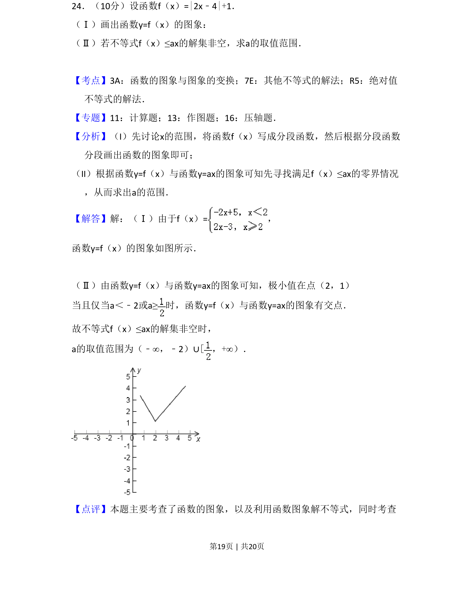
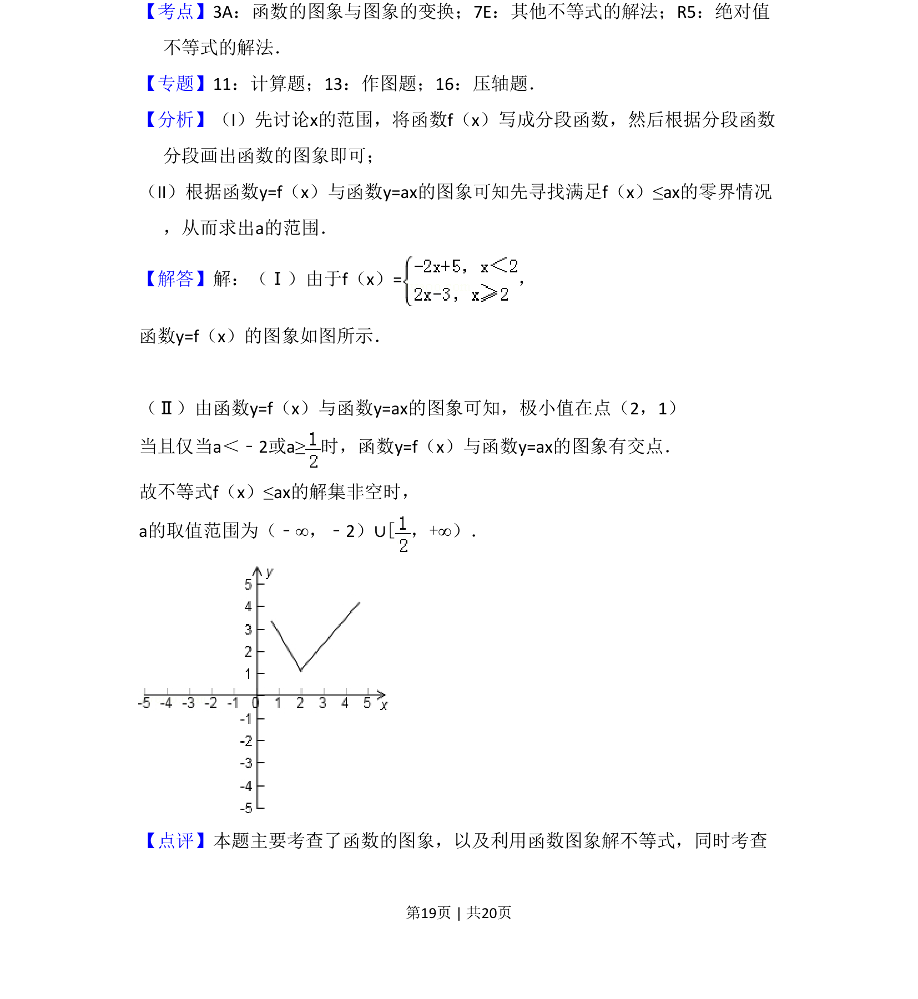
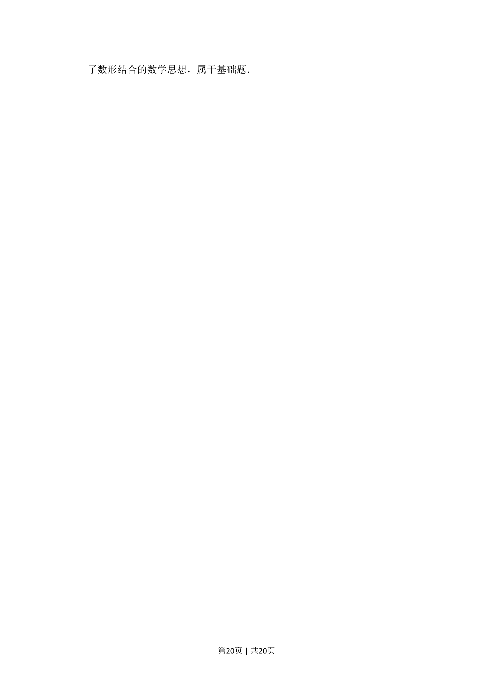

考点：函数的图象与图象的变换 其他不等式的解法 绝对值不等式

考查绝对值函数图象画法及利用图象解含参不等式求参数范围。


📄 原 PDF 第 19 页：
素材/真题/吉林/2008-2024·（吉林）数学高考真题/2010年高考数学试卷（文）（新课标）（解析卷）.pdf
24．（10分）设函数f（x）=|2x﹣4|+1． （Ⅰ）画出函数y=f（x）的图象： （Ⅱ）若不等式f（x）≤ax的解集非空，求a的取值范围．
【考点】3A：函数的图象与图象的变换；7E：其他不等式的解法；R5：绝对值 不等式的解法．菁优网版权所有 【专题】11：计算题；13：作图题；16：压轴题． 【分析】（I）先讨论x的范围，将函数f（x）写成分段函数，然后根据分段函数 分段画出函数的图象即可； （II）根据函数y=f（x）与函数y=ax的图象可知先寻找满足f（x）≤ax的零界情况 ，从而求出a的范围． 【解答】解：（Ⅰ）由于f（x）=， 函数y=f（x）的图象如图所示． （Ⅱ）由函数y=f（x）与函数y=ax的图象可知，极小值在点（2，1） 当且仅当a＜﹣2或a≥时，函数y=f（x）与函数y=ax的图象有交点． 故不等式f（x）≤ax的解集非空时， a的取值范围为（﹣∞，﹣2）∪[，+∞）． 【点评】本题主要考查了函数的图象，以及利用函数图象解不等式，同时考查